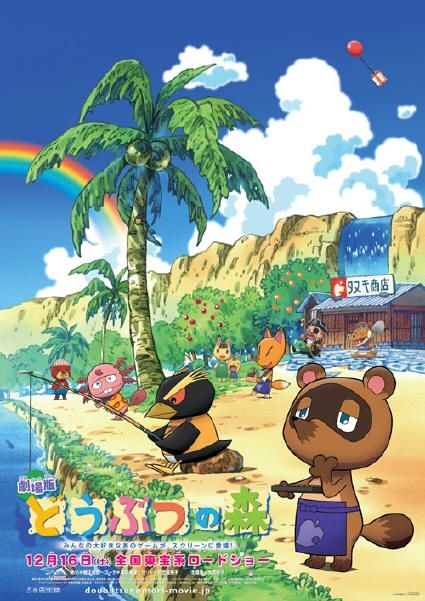
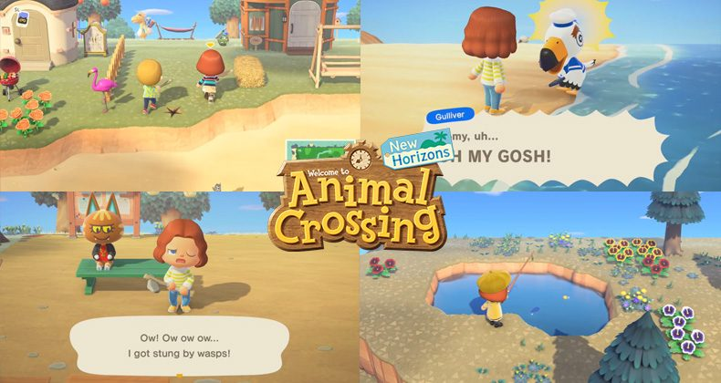
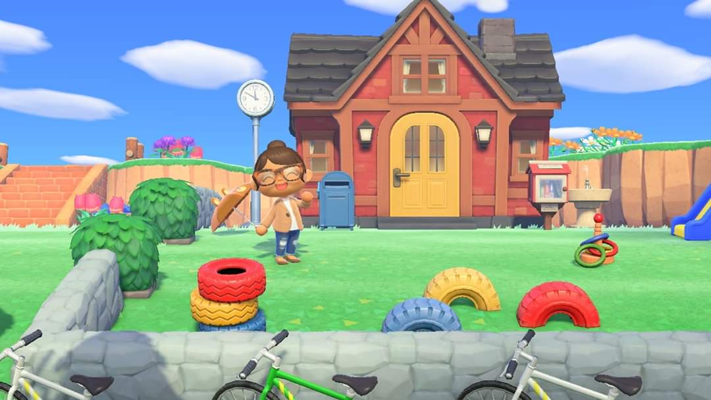
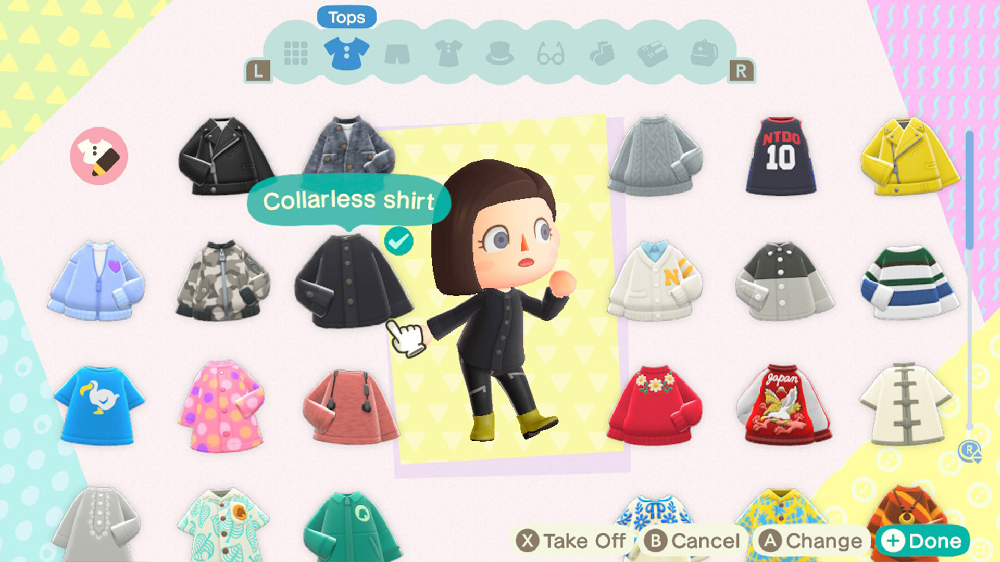
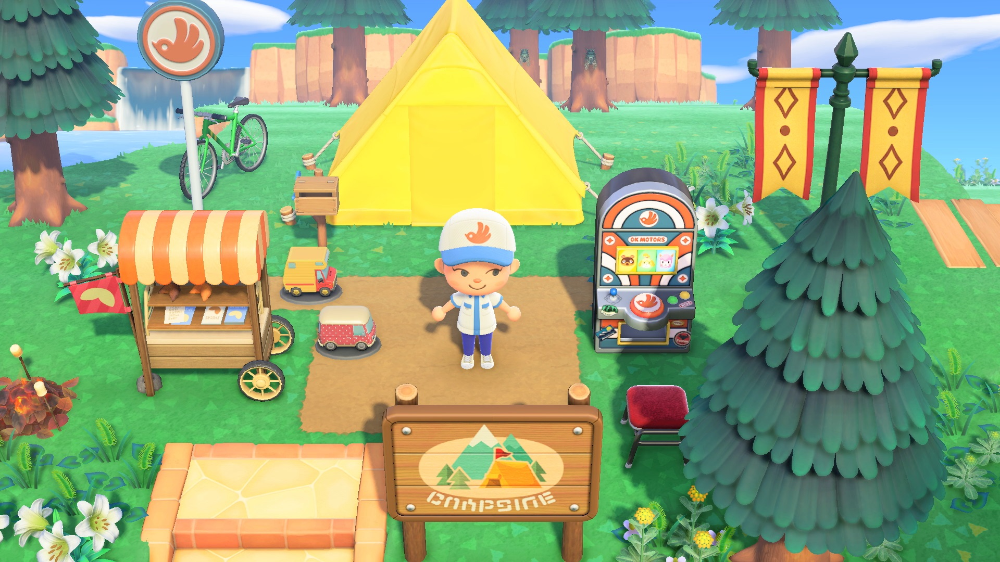
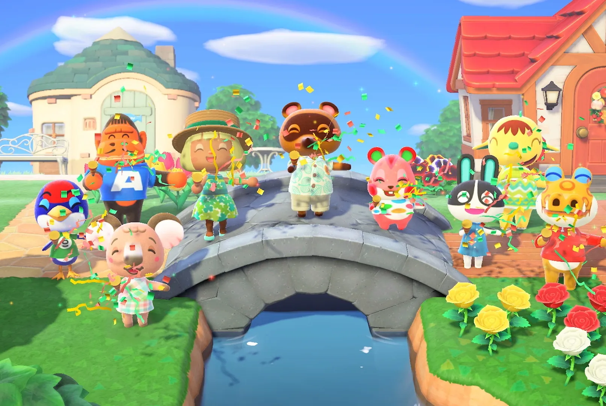

This is a wallpaper that tells you about animal crossing. In front you can see tommy one of the default helpers and villagers in the city center on your island! He's super nice and helps you move in and feel comfy!

This image shows you the PEAK gameplay in animal crossing. The person is you or your custom character and the day to day gameplay in this game!

This is one of the many houses that you can make and decorate in animal crossing. TRUST ME making your own house is really fun and totally worth it!

Here you can see the different clothing you can get and even create yourslef in animal crossing. There are NO LIMITS so go wild and create an awesome closet!

This is another typical gameplay picture. Here you can see the tent you get when you move in and soem awesome deco items you get as you move further in the game. You can play your own way YAYA!

This is what makign a cool town looks like. There are a bunch of houses, connented islands, and villagers you can talk to AND play with. You should really play animal crossing!